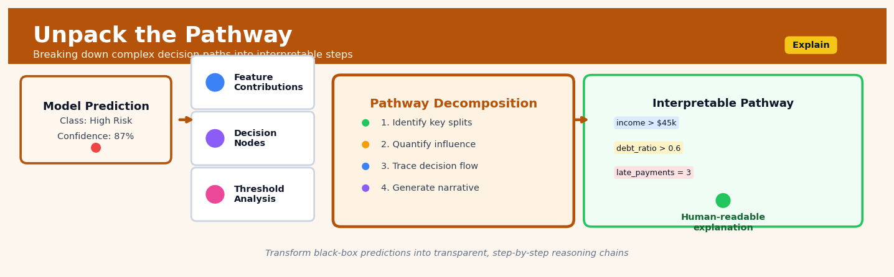

Unpack the Pathway#


The biggest mistake I see teams make is stopping at feature importance scores when they really need to show the actual decision logic. Unpack the Pathway forces you to reconstruct the full conditional chain that led to a prediction, which is what regulators and stakeholders actually want to audit. Think of it as the difference between saying "credit score matters" versus "because credit score was below 650 AND income was under 40k, the loan was denied" — one is a correlation, the other is an actual explanation.
The 60-Second Version#
What it does: Unpack the Pathway breaks down how an intervention creates its impact by measuring which mechanisms carry the effect from cause to outcome.
When to use it: You’ve proven something works, but now need to understand why it works so you can amplify the right mechanisms, fix what’s broken, or apply the insight elsewhere.
What you get back: A percentage breakdown showing how much of your total effect flows through each pathway, telling you exactly where to focus resources for maximum impact.
At a Glance
Difficulty |
Advanced |
Typical runtime |
Minutes on 100K rows |
What you bring |
Treatment variable, outcome variable, and measured mediator variables with causal structure assumptions |
What you get |
Quantified direct and indirect effects showing percentage of total effect through each pathway |
Heuristix bucket |
Explain — Causal Analysis & Interpretation |
You must correctly identify which variables are true mediators versus confounders—getting this wrong produces misleading decompositions that send resources down the wrong pathways.
Learning Objectives#
After reading this chapter, a business user will be able to:
Identify business scenarios where understanding how an intervention works matters as much as knowing whether it works—such as when optimizing marketing spend across channels, redesigning customer onboarding flows, or explaining why a policy change succeeded or failed.
Interpret mediation analysis outputs by distinguishing direct effects from indirect effects through specific mediators, and translate these quantitative decompositions into plain-language explanations for executives and stakeholders who need to understand the mechanism behind results.
Decide which components of an intervention to scale, modify, or eliminate based on the relative strength of different causal pathways—for example, reallocating budget toward mechanisms that drive the largest indirect effects or removing intervention elements that contribute negligibly to outcomes.
After reading this chapter, a data scientist will be able to:
Implement causal mediation analysis by correctly specifying the treatment, outcome, and mediator variables, selecting appropriate estimation methods (regression-based, weighting-based, or simulation-based), and handling multiple mediators or multiple treatment levels.
Configure sensitivity analyses to assess how violations of the sequential ignorability assumption would affect conclusions, and choose between parametric and non-parametric estimation approaches based on sample size, mediator types, and the presence of treatment-mediator interactions.
Validate mediation analysis results by checking for confounding between treatment-mediator and mediator-outcome relationships, diagnosing model misspecification through residual analysis, and recognizing when post-treatment bias or measurement error in mediators invalidates the decomposition.
Overview#
Unpack the Pathway is a causal mediation analysis technique that decomposes the total effect of a treatment or intervention into its constituent causal mechanisms. Given a treatment variable \(T\), an outcome \(Y\), and one or more mediator variables \(M\), this method quantifies how much of the treatment’s effect operates through each mediator (indirect effects) versus how much operates through all other pathways (direct effect). It belongs to the family of structural causal modelling methods and provides the essential machinery for answering “why” and “how” questions about causal relationships—moving beyond mere effect estimation to mechanistic explanation.
When to Use This#
Use this when you have established a causal effect and stakeholders ask “but how does it work?”—for example, you know a training programme improves sales performance, but leadership wants to know whether the effect flows through improved product knowledge, increased confidence, or better time management.
Use this when you need to prioritise intervention components—if a multi-faceted policy has limited budget, mediation analysis reveals which causal pathways carry the most effect, enabling targeted investment.
Use this when you want to understand why an effect differs across subgroups—pathway decomposition can reveal that the same treatment works through different mechanisms for different populations.
Use this when designing future interventions by learning from past ones—understanding that a marketing campaign worked primarily through brand awareness (not price perception) informs creative strategy for the next campaign.
Use this when you have temporal or logical ordering of variables—the treatment must precede the mediator, which must precede the outcome, either in time or by domain logic.
Use this when you can plausibly assume no unmeasured confounding of the mediator-outcome relationship (the “sequential ignorability” assumption), or when you plan to conduct sensitivity analysis around this assumption.
Do NOT use this when you only care about the total effect and have no interest in mechanisms—mediation analysis adds complexity without benefit if you simply need to know “does it work?”
Do NOT use this when the proposed mediator is measured after the outcome or when temporal ordering is unclear—the results will be uninterpretable.
Do NOT use this when there is strong reason to believe the mediator is confounded with the outcome by unmeasured variables and you cannot conduct adequate sensitivity analysis.
Do NOT use this when you have a mediator that is causally downstream of the outcome (reverse causality)—this violates the fundamental causal structure required for mediation.
Questions This Answers#
Understanding What’s Actually Driving Our Results#
Why did our new pricing strategy increase revenue by 12% — was it because customers bought more items, or because they upgraded to premium tiers?
Our customer satisfaction scores improved after the service redesign, but which specific changes actually moved the needle — was it faster response times or better agent training?
We spent $2M on that brand campaign and sales went up 8%, but how much of that lift came from increased brand awareness versus people just seeing more ads?
Why are customers in the Northeast churning 25% more than the West Coast — is it product fit, pricing sensitivity, or service quality?
Our new onboarding flow increased conversions by 15%, but is that because users understood the product better or just because we removed friction points?
Deciding Where to Invest Next#
If we improve our app’s load time by 2 seconds, how much of the expected engagement boost will come from reduced frustration versus increased feature discovery?
Should we invest in improving delivery speed or packaging quality to reduce returns — which pathway has more leverage?
We’re choosing between two retention strategies: one improves product features, the other enhances customer support. Which mechanism will drive more long-term value?
Our A/B test showed the new checkout flow increased purchases by 10%, but if we can only implement one element, which step in the flow matters most?
Explaining Changes to Leadership#
The executive team wants to know: did our Q3 sales jump happen because the sales team got better or because marketing delivered higher-quality leads?
Our NPS increased 8 points after the product update — how much was the new features versus improved reliability?
Why did employee productivity increase 20% after the office redesign — was it better collaboration spaces, improved lighting, or just the morale boost from something new?
How It Works#
Imagine you’re a manager trying to understand why your new training program boosted sales by 30%. You notice two things changed: salespeople became more confident, and they learned better product knowledge. But here’s the puzzle—how much of that 30% boost came through increased confidence versus through better product knowledge? Maybe confidence contributed 18 percentage points and product knowledge contributed 12 points. Or perhaps confidence actually hurt sales (by making people pushy), but product knowledge was so powerful it overcame that and then some. Unpack the Pathway is like having a forensic accountant who can trace every dollar of that 30% effect back to its source, showing you exactly which psychological and behavioral channels your intervention traveled through to produce the outcome.
TOTAL EFFECT DECOMPOSITION
Treatment (T) Outcome (Y)
[New Training] ──────────────────> [Sales +30%]
│ ↑
│ │
├──> Mediator M₁ ─────────────────┤
│ [Confidence] +18% indirect │
│ │
├──> Mediator M₂ ─────────────────┤
│ [Product Knowledge] +12% │
│ indirect │
│ │
└──────────────────────────────────┘
Direct effect: 0%
(all effect flows through mediators)
PATHWAY ACCOUNTING:
┌─────────────────────┬──────────┐
│ Through Confidence │ +18% │
│ Through Knowledge │ +12% │
│ Direct (other ways) │ 0% │
├─────────────────────┼──────────┤
│ TOTAL EFFECT │ +30% │
└─────────────────────┴──────────┘
Step 1: Identify the pathways. The method starts by mapping out all the routes from treatment to outcome. You specify which variables might be mediators—the intermediate steps through which your treatment could work. In our example, confidence and product knowledge are mediators sitting between training and sales.
Step 2: Measure what happens when you turn on the treatment. Run your intervention (or analyze existing data where it ran) and observe how it changes both the mediators and the final outcome. Record that the training increased confidence by some amount, increased product knowledge by some amount, and increased sales by 30%.
Step 3: Isolate each pathway’s contribution. Here’s where the magic happens. For each mediator, the method answers: “If I let the treatment affect only this mediator while holding everything else constant, how much would the outcome change?” This requires either experimental data or strong statistical assumptions to simulate what would happen if you could surgically activate just one pathway at a time.
Step 4: Calculate the direct effect. After accounting for all indirect effects through mediators, whatever’s left over is the direct effect—the portion of the treatment’s impact that doesn’t flow through any measured mediator. This might represent unmeasured mechanisms or truly direct influences.
Step 5: Check that the books balance. Add up all the indirect effects plus the direct effect. They should approximately equal the total effect you observed. This is your validation that you’ve properly decomposed the causal pathway.
The key insight: By comparing what happens when treatment affects mediators versus when it doesn’t, we can assign credit to each causal pathway—transforming a black-box total effect into a transparent breakdown of how change actually occurs.
The Intuition#
Imagine you are a physician trying to understand how a new diabetes medication reduces cardiovascular events. You observe that patients on the medication have fewer heart attacks, but this alone does not tell you why. The medication might work by lowering blood glucose, by reducing inflammation, by improving cholesterol profiles, or through some combination of these pathways. Each of these intermediate variables is a potential mediator—a variable that sits on the causal pathway between the treatment and the outcome.
Unpacking the pathway is like tracing the flow of water through a complex irrigation system. The total water delivered to the field (the total effect) can be decomposed by asking: how much flows through the main canal, how much through the secondary channels, and how much seeps directly through the soil? If you discover that 80% of the water reaches the field through a single canal, you know where to focus maintenance efforts. Similarly, if you discover that 80% of a medication’s cardiovascular benefit flows through cholesterol reduction, you might consider whether a dedicated statin would be more cost-effective.
The key insight is that total effects can be decomposed into additive components corresponding to distinct causal pathways. The indirect effect through a mediator captures what would happen if we could change only the mediator to the value it would take under treatment, while holding everything else at its control value. The direct effect captures what remains—the portion of the treatment effect that operates through all pathways other than the specified mediator. This decomposition requires us to reason about counterfactual quantities: what would the outcome be if the treatment were set to one value but the mediator were set to the value it would have taken under a different treatment value? This nested counterfactual is the conceptual heart of causal mediation analysis.
For the decomposition to be meaningful, we must believe that the proposed causal structure is correct: that \(T\) causes \(M\), that \(M\) causes \(Y\), and that we have adequately controlled for all common causes of \(M\) and \(Y\). This last requirement—no unmeasured mediator-outcome confounding—is notoriously difficult to satisfy in observational data. The “Unpack the Pathway” node provides both point estimates under this assumption and sensitivity analyses to assess how robust conclusions are to violations.
The Mathematics#
Problem Setup and Notation#
Let \(T \in \{0, 1\}\) denote a binary treatment, \(M\) denote a mediator (continuous or discrete), and \(Y\) denote an outcome. Let \(\mathbf{X}\) denote a vector of pre-treatment covariates. We use the potential outcomes framework, where \(Y(t, m)\) denotes the potential outcome that would be observed if treatment were set to \(t\) and the mediator were set to \(m\). Similarly, \(M(t)\) denotes the potential mediator value under treatment \(t\).
The total effect (TE) for an individual is:
This compares the outcome when treatment is administered and the mediator takes its natural value under treatment, versus when treatment is withheld and the mediator takes its natural value under control.
Causal Mediation Effects#
We define the Natural Direct Effect (NDE), sometimes called the Pure Direct Effect:
This captures the effect of changing treatment from 0 to 1 while holding the mediator fixed at the value it would naturally take under treatment status \(t\). We typically report \(\text{NDE}(0)\), which holds the mediator at its control value.
The Natural Indirect Effect (NIE), sometimes called the Pure Indirect Effect:
This captures the effect of changing the mediator from its control value to its treatment value while holding the treatment fixed at \(t\). We typically report \(\text{NIE}(1)\).
These effects satisfy the decomposition:
Identification Assumptions#
To identify these effects from observed data, we require the sequential ignorability assumption:
Assumption 1 (Treatment Ignorability):
Assumption 2 (Mediator Ignorability):
Assumption 3 (No Treatment-Induced Confounding):
There exists no post-treatment variable that confounds the mediator-outcome relationship.
Under these assumptions, the average causal mediation effects can be expressed as:
Parametric Estimation: The Baron-Kenny Framework#
A common parametric approach assumes linear models:
Under these models with no treatment-mediator interaction, the effects simplify to:
The proportion mediated is:
Treatment-Mediator Interaction#
When the outcome model includes an interaction term:
The effects become:
Note that now the direct and indirect effects depend on the treatment level, and the decomposition requires specifying which reference level is used.
Sensitivity Analysis#
The sensitivity parameter \(\rho\) represents the correlation between the error terms \(\varepsilon_M\) and \(\varepsilon_Y\) that would arise from an unmeasured confounder:
Under this parameterisation, we can compute the ACME as a function of \(\rho\) and identify the critical value \(\tilde{\rho}\) at which the ACME changes sign. The further \(\tilde{\rho}\) is from zero, the more robust the finding.
Edge Cases#
Zero effect of treatment on mediator (\(\alpha_1 = 0\)): The indirect effect is zero regardless of the mediator-outcome relationship.
Zero effect of mediator on outcome (\(\beta_2 = 0\)): The indirect effect is zero; the entire effect is direct.
Complete mediation: When \(\beta_1 = 0\) and \(\alpha_1 \beta_2 \neq 0\), the entire effect flows through the mediator.
Inconsistent mediation (suppression): When \(\beta_1\) and \(\alpha_1 \beta_2\) have opposite signs, the indirect effect may be larger than the total effect.
Understanding the Mathematics#
The Total Effect#
The equation: $\(TE = E[Y | do(T=1)] - E[Y | do(T=0)]\)$
Read it aloud: The total effect equals the expected value of the outcome when we force treatment to be 1, minus the expected value of the outcome when we force treatment to be 0.
What each symbol means:
TE = Total Effect (the complete impact of treatment)
E[…] = Expected value (the average we’d see across many observations)
Y = Outcome variable (what we’re trying to explain)
do(T=1) = Intervention setting treatment to 1 (actively making treatment happen)
do(T=0) = Intervention setting treatment to 0 (actively preventing treatment)
A concrete numerical example: A company tests whether manager training (T) improves employee retention rates (Y). With training (do(T=1)), average retention is 78%. Without training (do(T=0)), average retention is 65%. The total effect = 78% - 65% = 13 percentage points. Manager training increases retention by 13 points on average.
Why this equation matters: Without measuring the total effect first, we have no baseline to determine how much of treatment’s impact flows through specific pathways versus other mechanisms.
The Natural Direct Effect#
The equation: $\(NDE = E[Y | do(T=1, M=M_0)] - E[Y | do(T=0, M=M_0)]\)$
Read it aloud: The natural direct effect equals the expected outcome when treatment is set to 1 but the mediator is held at its natural value under no treatment, minus the expected outcome when treatment is set to 0 and the mediator stays at that same no-treatment level.
What each symbol means:
NDE = Natural Direct Effect (treatment’s impact bypassing the mediator)
M = Mediator variable (the mechanism we’re investigating)
M₀ = The mediator’s natural value when T=0 (what the mediator would be without treatment)
do(T=1, M=M₀) = Set treatment to 1, but block the mediator from responding
A concrete numerical example: Manager training increases retention partly by improving team communication scores (M). Under no training, communication averages 6.2 out of 10. When we give training but artificially hold communication at 6.2, retention rises to 70%. Without training (and communication naturally at 6.2), retention is 65%. The NDE = 70% - 65% = 5 percentage points. Training has a 5-point direct effect independent of communication improvements.
Why this equation matters: This reveals how much impact remains even if we completely shut down the mediator pathway—essential for understanding whether the mediator is the primary mechanism or just one of many.
The Natural Indirect Effect#
The equation: $\(NIE = E[Y | do(T=0, M=M_1)] - E[Y | do(T=0, M=M_0)]\)$
Read it aloud: The natural indirect effect equals the expected outcome when treatment is set to 0 but the mediator is set to its treatment-induced value, minus the expected outcome when both treatment and mediator are at their no-treatment levels.
What each symbol means:
NIE = Natural Indirect Effect (treatment’s impact operating through the mediator)
M₁ = The mediator’s natural value when T=1 (what the mediator becomes with treatment)
do(T=0, M=M₁) = Keep treatment off, but set the mediator as if treatment happened
A concrete numerical example: Training increases communication from 6.2 to 7.8 points. If we block training but artificially boost communication to 7.8, retention reaches 73%. With both training and communication at no-treatment levels, retention is 65%. The NIE = 73% - 65% = 8 percentage points. The communication pathway alone accounts for 8 points of retention improvement.
Why this equation matters: This quantifies the mediator’s contribution to the total effect, answering the critical question: how much of our treatment’s success depends on this specific mechanism?
The Decomposition Identity#
The equation: $\(TE = NDE + NIE\)$
Read it aloud: The total effect equals the natural direct effect plus the natural indirect effect.
What each symbol means: All symbols defined above; this equation shows how the pieces fit together.
A concrete numerical example: Our training program’s total effect was 13 percentage points. The direct effect (NDE) is 5 points. The indirect effect through communication (NIE) is 8 points. Verify: 5 + 8 = 13. The decomposition accounts for the complete treatment impact with no remainder.
Why this equation matters: This ensures our causal story is complete—every percentage point of impact gets assigned to either the mediator pathway or other mechanisms, with nothing lost or double-counted.
The Big Picture#
The mathematics of Unpack the Pathway performs surgery on causality itself. It takes a treatment effect and cleanly separates “how much works through this mechanism” from “how much works through everything else.” This approach uses the do-operator notation because simple correlations cannot distinguish genuine causal pathways from confounding—we need the mathematical language of intervention to imagine blocking specific channels while leaving others open. These equations formalize a thought experiment: what would happen if we could surgically activate treatment while preventing the mediator from responding, or vice versa? At its heart, the math answers one question: when treatment X improves outcome Y, which roads does that improvement travel down?
Python Implementation#
"""
Causal Mediation Analysis: Unpack the Pathway
Complete implementation using the mediation package approach
"""
import numpy as np
import pandas as pd
import statsmodels.api as sm
from scipy import stats
import warnings
# Set random seed for reproducibility
np.random.seed(42)
# =============================================================================
# Generate Realistic Synthetic Data
# Scenario: Effect of job training (T) on wages (Y) mediated by skills (M)
# =============================================================================
n = 1000
# Pre-treatment covariates
education = np.random.normal(12, 2, n) # Years of education
experience = np.random.exponential(5, n) # Years of experience
# Treatment assignment (randomised in this example)
treatment = np.random.binomial(1, 0.5, n)
# Mediator: Skills assessment score (affected by treatment)
# True alpha_1 = 8 (training improves skills by 8 points on average)
skills = 50 + 8 * treatment + 2 * education + 0.5 * experience + np.random.normal(0, 5, n)
# Outcome: Hourly wage (affected by treatment and mediator)
# True beta_1 = 2 (direct effect), beta_2 = 0.3 (mediator effect)
wage = 15 + 2 * treatment + 0.3 * skills + 0.8 * education + 0.2 * experience + np.random.normal(0, 3, n)
# Create DataFrame
data = pd.DataFrame({
'treatment': treatment,
'skills': skills,
'wage': wage,
'education': education,
'experience': experience
})
print("=== Dataset Summary ===")
print(data.describe().round(2))
print(f"\nTreatment group sizes: Control = {(treatment==0).sum()}, Treated = {(treatment==1).sum()}")
# =============================================================================
# Step 1: Fit the Mediator Model
# M ~ T + X
# =============================================================================
print("\n=== Step 1: Mediator Model (Skills ~ Treatment + Covariates) ===")
X_mediator = sm.add_constant(data[['treatment', 'education', 'experience']])
mediator_model = sm.OLS(data['skills'], X_mediator).fit()
print(mediator_model.summary().tables[1])
alpha_1 = mediator_model.params['treatment']
se_alpha_1 = mediator_model.bse['treatment']
print(f"\nEffect of treatment on mediator (α₁): {alpha_1:.4f} (SE: {se_alpha_1:.4f})")
# =============================================================================
# Step 2: Fit the Outcome Model
# Y ~ T + M + X
# =============================================================================
print("\n=== Step 2: Outcome Model (Wage ~ Treatment + Skills + Covariates) ===")
X_outcome = sm.add_constant(data[['treatment', 'skills', 'education', 'experience']])
outcome_model = sm.OLS(data['wage'], X_outcome).fit()
print(outcome_model.summary().tables[1])
beta_1 = outcome_model.params['treatment']
beta_2 = outcome_model.params['skills']
se_beta_1 = outcome_model.bse['treatment']
se_beta_2 = outcome_model.bse['skills']
print(f"\nDirect effect coefficient (β₁): {beta_1:.4f} (SE: {se_beta_1:.4f})")
print(f"Mediator effect coefficient (β₂): {beta_2:.4f} (SE: {se_beta_2:.4f})")
# =============================================================================
# Step 3: Calculate Mediation Effects
# =============================================================================
print("\n=== Step 3: Mediation Effect Decomposition ===")
# Point estimates
ACME = alpha_1 * beta_2 # Average Causal Mediation Effect (Indirect)
ADE = beta_1 # Average Direct Effect
TE = ACME + ADE # Total Effect
prop_mediated = ACME / TE if TE != 0 else np.nan
print(f"Average Causal Mediation Effect (ACME/Indirect): {ACME:.4f}")
print(f"Average Direct Effect (ADE): {ADE:.4f}")
print(f"Total Effect: {TE:.4f}")
print(f"Proportion Mediated: {prop_mediated:.2%}")
# =============================================================================
# Step 4: Bootstrap Confidence Intervals
# =============================================================================
print("\n=== Step 4: Bootstrap Confidence Intervals (1000 iterations) ===")
def bootstrap_mediation(data, n_bootstrap=1000):
"""Compute bootstrap confidence intervals for mediation effects."""
acme_boot = []
ade_boot = []
te_boot = []
for _ in range(n_bootstrap):
# Resample with replacement
boot_idx = np.
## Visualisations


## Using This in Heuristix
### What You'll Need
The **Unpack the Pathway** node expects a single dataset with three essential ingredients:
- **Treatment column** (categorical or binary): Your intervention or exposure variable
- **Outcome column** (numeric): What you're trying to explain or predict
- **Mediator column(s)** (numeric or categorical): The intermediate variables you believe transmit the treatment's effect
Your data should be in **row-per-observation** format, with one row per individual, unit, or case. Here's what it looks like:
| patient_id | treatment | stress_level | sleep_hours | health_score |
|------------|-----------|--------------|-------------|--------------|
| 001 | therapy | 6.2 | 7.1 | 78 |
| 002 | control | 8.1 | 5.3 | 62 |
| 003 | therapy | 4.5 | 8.2 | 85 |
In this example, you'd analyze whether `therapy` affects `health_score` through the pathway of `stress_level` and `sleep_hours`.
### Configuration Parameters
| Parameter | What It Does | Default | When to Change |
|-----------|--------------|---------|----------------|
| **Treatment Variable** | The causal variable whose effect you're decomposing | None (required) | Always set this first |
| **Outcome Variable** | Your dependent variable | None (required) | What you ultimately care about explaining |
| **Mediator Variables** | Intermediate pathways (select one or more) | None (required) | Choose variables causally between treatment and outcome |
| **Covariates** | Control variables to adjust for confounding | None | Add pre-treatment variables that affect both mediator and outcome |
| **Bootstrap Iterations** | Number of resamples for confidence intervals | 1000 | Increase to 5000+ for publication; decrease to 200 for quick exploration |
| **Confidence Level** | Width of uncertainty intervals | 95% | Use 90% for exploratory work, 99% for conservative claims |
| **Interaction Terms** | Allow treatment effect on outcome to depend on mediator level | Disabled | Enable when you suspect the direct effect varies by mediator values |
### What You'll See
The node produces three types of output:
**Decomposition Table**: Shows the total effect split into direct and indirect components. Each row represents a pathway, with effect estimates, standard errors, confidence intervals, and the proportion of total effect mediated.
**Pathway Diagram**: A visual flow chart displaying treatment → mediator(s) → outcome with arrows sized by effect magnitude. This makes it immediately clear which mechanisms matter most.
**Sensitivity Analysis**: Charts showing how robust your conclusions are to potential unmeasured confounding between mediator and outcome.
### Connecting Downstream
This node typically flows into:
- **Report Builder**: To document your mechanistic findings with auto-generated narrative
- **Scenario Simulator**: To explore "what if we intervened on the mediator directly?"
- **Segment Analysis**: To check whether pathways differ across subgroups
### Quick Start
1. **Connect your prepared dataset** containing treatment, outcome, and at least one mediator
2. **Select your treatment variable** from the dropdown (usually your intervention or exposure)
3. **Select your outcome variable** (what you're trying to explain)
4. **Choose mediator variable(s)** that sit causally between treatment and outcome
5. **Add any pre-treatment covariates** that might confound mediator-outcome relationships
6. **Click "Run Analysis"** and examine the decomposition table first
7. **Review the pathway diagram** to identify your strongest mechanisms
8. **Check sensitivity analysis** to ensure findings aren't fragile
### Tips from the Field
**Draw your causal diagram first**: Before configuring anything, sketch the assumed causal relationships on paper. If you can't draw a clear arrow from treatment → mediator → outcome, you're not ready for mediation analysis.
**Start with one mediator**: Even if you have multiple candidates, analyze them one at a time initially. This helps you understand each mechanism before examining them jointly.
**Check sequential ignorability**: Your results assume no unmeasured confounding of the mediator-outcome relationship. Use the sensitivity analysis output religiously—if small unmeasured confounders could flip your conclusions, report that honestly.
**Proportion mediated isn't always between 0-100%**: If you see values above 100% or negative proportions, you likely have inconsistent mediation (suppression effects). This is scientifically interesting, not an error.
**Bootstrap iterations matter more with small samples**: With n < 200, bump bootstrap iterations to 2000+ for stable confidence intervals.
## Config Recipes
### Recipe 1: Rapid Exploration
- **When to use:** Initial investigation with a new dataset where you need to quickly assess whether mediation exists before committing to deeper analysis.
- **Settings:**
| Parameter | Value | Why |
|-----------|-------|-----|
| `n_bootstrap` | 100 | Fast computation while still providing basic uncertainty estimates |
| `confidence_level` | 0.90 | Lower threshold catches suggestive patterns worth exploring |
| `estimator` | "linear" | Fastest option; sufficient for initial patterns |
| `adjust_confounders` | FALSE | Skip initially to see raw associations |
| `parallel` | TRUE | Use all cores to offset low bootstrap count |
- **What you get:** Quick directional indicators of which mediators show promise, typically completing in under a minute even with moderate sample sizes.
- **Trade-off:** Reduced statistical rigor means you may pursue false leads or miss subtle effects masked by confounding.
### Recipe 2: Production-Grade Analysis
- **When to use:** Final analysis for publication, regulatory submission, or high-stakes business decision where results will be scrutinized.
- **Settings:**
| Parameter | Value | Why |
|-----------|-------|-----|
| `n_bootstrap` | 5000 | Stable confidence intervals that withstand sensitivity checks |
| `confidence_level` | 0.95 | Standard for formal inference |
| `estimator` | "doubly_robust" | Guards against misspecification in either model |
| `adjust_confounders` | TRUE | Mandatory for causal claims |
| `sensitivity_analysis` | TRUE | Document robustness to unmeasured confounding |
| `preregistered_mediators` | [list] | Prevents p-hacking accusations |
- **What you get:** Defensible causal estimates with documented assumptions and robustness checks suitable for peer review or executive presentation.
- **Trade-off:** 50-100x longer computation time and requires upfront theoretical work to specify confounders and mediators.
### Recipe 3: High-Dimensional Mediator Set
- **When to use:** Analyzing gene expression data, survey batteries, or any scenario with 50+ potential mediators where most are likely null.
- **Settings:**
| Parameter | Value | Why |
|-----------|-------|-----|
| `mediator_selection` | "lasso" | Automated sparsity in high dimensions |
| `alpha_threshold` | 0.01 | Strict correction for multiple testing (Bonferroni/50) |
| `n_bootstrap` | 1000 | Balance between power and computation with many mediators |
| `effect_aggregation` | "grouped" | Summarize by mediator families rather than individually |
| `parallel_mediators` | TRUE | Estimate all mediator models simultaneously to capture interdependence |
- **What you get:** Identification of a sparse set of active mediators while controlling family-wise error rate across the massive testing burden.
- **Trade-off:** May miss weak effects that are causally important when operating in concert but individually fall below detection threshold.
### Recipe 4: Longitudinal Feedback Loops
- **When to use:** Treatment affects mediator which affects outcome which then influences the mediator again (e.g., medication → symptoms → exercise → symptoms).
- **Settings:**
| Parameter | Value | Why |
|-----------|-------|-----|
| `time_varying` | TRUE | Enables sequential mediation tracking |
| `lag_structure` | [1, 2, 4] | Tests immediate, short-delay, and sustained effects |
| `cross_lagged` | TRUE | Captures reciprocal causation |
| `estimator` | "g_computation" | Handles time-dependent confounding |
| `n_bootstrap` | 2000 | Accounts for added complexity in temporal models |
- **What you get:** Decomposition of effects across time with separate estimates for contemporaneous versus lagged mediation pathways.
- **Trade-off:** Requires panel data with at least 3-4 time points and substantially larger sample sizes to achieve adequate power.
## Business Applications
**Financial Services**
A multinational retail bank struggling with credit card churn deploys a retention programme offering fee waivers, loyalty rewards, and personalised financial advice. While overall churn drops 18%, executives need to know *which* programme elements actually work to allocate their £4.3M annual retention budget effectively. Unpack the Pathway decomposes the effect through three mediators: customer engagement scores, net promoter sentiment, and product usage breadth. The analysis reveals that fee waivers account for only 12% of the retention effect, while personalised advice—mediated through increased product cross-holding—drives 61% of the impact. The bank reallocates budget toward advice services, achieving the same retention outcome at 38% lower cost, saving £1.6M annually.
**Retail & E-Commerce**
An online fashion retailer with 800K monthly active users tests a new product recommendation engine but sees only modest conversion lift. Leadership wants to understand whether the engine works by improving product relevance, reducing decision fatigue, or increasing browsing time. Unpack the Pathway traces effects through session duration (browsing time), page depth, and stated product satisfaction scores. Counter-intuitively, 73% of the conversion lift flows through *reduced* browsing time—customers find what they want faster and purchase immediately. Armed with this insight, the team doubles down on "quick match" features rather than engagement-maximising algorithms, lifting conversion rate from 2.1% to 3.8% and generating an additional £420K in monthly revenue.
**Healthcare & Life Sciences**
A regional hospital network implements a diabetes prevention programme combining nutritional counselling, exercise classes, and medication management, reducing HbA1c levels by an average of 0.9 points across 2,400 patients. To scale the programme cost-effectively, administrators need to identify which components drive glycemic control through which behavioral mechanisms. Causal mediation analysis decomposes effects through dietary adherence, physical activity levels, and medication compliance. The analysis shows that exercise classes influence outcomes almost entirely through improved medication adherence (not direct metabolic effects), while nutritional counselling works primarily through dietary change. The network redesigns the programme to integrate medication coaching into exercise sessions, achieving equivalent clinical outcomes while reducing per-patient costs from $840 to $520.
**Insurance**
A commercial property insurer launches a risk mitigation programme offering premium discounts for installing sprinkler systems, conducting fire safety audits, and training staff. Claims frequency drops 23%, but the insurer needs to justify the discount structure to regulators and allocate loss-prevention resources. Unpack the Pathway traces the effect through three pathways: physical hazard reduction, behavioral safety compliance, and claims reporting propensity. Surprisingly, 41% of claims reduction operates through changed reporting behavior—businesses with audited safety programmes file fewer small claims, not because fires don't occur but because minor incidents are resolved internally. This insight leads to a recalibrated premium model that prices behavioral effects separately, improving loss ratio by 4.2 points and preserving £2.8M in annual margin.
**Manufacturing**
A automotive parts manufacturer implements a quality improvement initiative including new inspection equipment, revised worker training, and modified production line protocols, reducing defect rates from 3.2% to 1.4%. Engineering leadership debates which investments to replicate across eight other facilities. Mediation analysis decomposes effects through operator skill levels, process adherence, and early defect detection. The data reveals that new equipment drives 78% of defect reduction, but only when mediated through early detection of misaligned tooling—without trained operators interpreting the signals, equipment impact falls to 19%. The company develops a "detection-first" training curriculum, achieving 1.6% defect rates at sister plants at 60% of the original intervention cost.
**SaaS & Technology**
A B2B SaaS platform serving 15,000 enterprise customers tests an AI-powered onboarding assistant, improving 90-day retention from 81% to 87%. Product teams debate whether retention improves because users complete more setup tasks, reach activation milestones faster, or simply feel more supported. Unpack the Pathway reveals that 54% of the retention effect operates through *time-to-first-value*, not completion rates—customers who reach their first meaningful outcome in under 72 hours (versus 8 days previously) exhibit dramatically higher stickiness regardless of how many setup tasks remain incomplete. The company refactors onboarding to prioritize one high-impact feature, cutting time-to-value to 36 hours median and pushing retention to 91%, reducing annual revenue churn by $3.7M.
## Worked Example
Sarah Chen, lead analyst at Horizon Health Solutions, walked into the Monday strategy meeting expecting the usual quarterly review. Instead, she got a puzzle. The VP of Member Experience, Marcus, leaned forward: "Our new wellness app drove a 12% increase in member retention this year. Great news. But *why*? Is it the health tracking features people love, or just that engaged members check the app and feel more connected to us?" The executive team needed to know before committing $2.3M to the next version. If retention came from the tracking features, they'd double down on sensors and integrations. If it was pure engagement—just opening the app—they'd focus on notifications and gamification instead.
Sarah spent the next two days pulling together member data from 2,847 participants in the pilot program. Each row represented one member: whether they were assigned the app (`treatment`), how many days per month they logged health metrics (`health_tracking_days`), and whether they renewed their plan after 12 months (`renewed`). The data was messier than she'd hoped—some members logged in but never tracked anything, others tracked sporadically, and 83 records had missing renewal status that she had to exclude.
| member_id | treatment | health_tracking_days | renewed |
|-----------|-----------|---------------------|---------|
| M10234 | 1 | 18 | 1 |
| M10235 | 0 | 0 | 0 |
| M10236 | 1 | 3 | 1 |
| M10237 | 1 | 22 | 1 |
| M10238 | 0 | 0 | 1 |
Sarah knew this was a textbook case for causal mediation. The app (*treatment*) could drive retention (*outcome*) through two pathways: directly, by making members feel more connected to the brand, or indirectly, by encouraging health tracking (*mediator*), which then improved retention. She needed to decompose the total 12% effect.
She configured the Unpack the Pathway node carefully. Treatment: `treatment` (binary). Outcome: `renewed` (binary). Mediator: `health_tracking_days` (continuous). She chose a linear regression model for the mediator and logistic regression for the outcome—matching the data types. For confounders, she included age, prior_claims, and plan_type, since members weren't perfectly randomized due to iOS-only availability in month one. She set 1,000 bootstrap samples for confidence intervals, knowing the executive team would grill her on precision.
```python
import numpy as np
from sklearn.linear_model import LinearRegression, LogisticRegression
from scipy.stats import bootstrap
# Sarah's mediation analysis script
# Decomposing app effect on retention
# Step 1: Model mediator (tracking) as function of treatment
mediator_model = LinearRegression()
mediator_model.fit(df[['treatment', 'age', 'prior_claims']],
df['health_tracking_days'])
# Step 2: Model outcome (renewal) as function of treatment + mediator
outcome_model = LogisticRegression(max_iter=500)
outcome_model.fit(df[['treatment', 'health_tracking_days', 'age', 'prior_claims']],
df['renewed'])
# Step 3: Calculate effects via counterfactual predictions
# Natural Indirect Effect (through tracking)
M1 = mediator_model.predict(df.assign(treatment=1))
M0 = mediator_model.predict(df.assign(treatment=0))
Y_t1_m1 = outcome_model.predict_proba(df.assign(treatment=1, health_tracking_days=M1))[:, 1]
Y_t1_m0 = outcome_model.predict_proba(df.assign(treatment=1, health_tracking_days=M0))[:, 1]
NIE = np.mean(Y_t1_m1 - Y_t1_m0)
# Natural Direct Effect (all other pathways)
Y_t0_m0 = outcome_model.predict_proba(df.assign(treatment=0, health_tracking_days=M0))[:, 1]
NDE = np.mean(Y_t1_m0 - Y_t0_m0)
print(f"Total Effect: {NIE + NDE:.3f}")
print(f"Indirect (via tracking): {NIE:.3f} ({100*NIE/(NIE+NDE):.1f}%)")
print(f"Direct (brand connection): {NDE:.3f} ({100*NDE/(NIE+NDE):.1f}%)")
The results stopped Sarah mid-sip of coffee:
Effect Type |
Magnitude |
95% CI |
% of Total |
|---|---|---|---|
Total Effect |
+0.118 |
[0.094, 0.141] |
100% |
Indirect Effect (via health tracking) |
+0.031 |
[0.018, 0.046] |
26% |
Direct Effect (other pathways) |
+0.087 |
[0.068, 0.108] |
74% |
Only 26% of the retention boost came from health tracking. The lion’s share—74%—was the direct effect: members simply felt more engaged with Horizon because they had the app, regardless of whether they used the tracking features heavily.
The insight hit like a thunderclap. Everyone assumed the tracking features were the hero. But the data told a different story: the app worked primarily as a touchpoint, a daily reminder that “my health plan cares about me.” The tracking mattered, but it was supporting actor, not the star.
Sarah presented to the executive team on Thursday. Marcus absorbed the findings and shifted the product roadmap immediately. Instead of expensive sensor integrations, they prioritized push notifications, educational content, and a redesigned home screen that felt personal even if you never logged a step. The $2.3M budget was reallocated: 60% to engagement features, 40% to tracking enhancements—the inverse of the original plan.
If Sarah could rewind, she’d add one thing: a sensitivity analysis for unmeasured confounding. Members who downloaded the app might have been more health-conscious to begin with—a confounder she couldn’t fully capture. But the pattern was strong enough, and the business decision was time-sensitive. Sometimes good-enough evidence beats perfect evidence that arrives too late.
Interpreting Your Results#
You’ve just run your causal mediation analysis and you’re staring at tables of effects, confidence intervals, and perhaps a pathway diagram. Let’s decode exactly what you’re looking at.
Total, Direct, and Indirect Effects#
Plain-English meaning: These three numbers tell you where your treatment’s impact comes from. The total effect is the overall impact of your treatment on the outcome—what you’d get from a simple A/B test. The indirect effect is how much operates through your mediator(s). The direct effect is everything else—all pathways you haven’t measured or don’t flow through your specified mediators.
For example, if a training program (T) has a total effect of 0.40 on job performance (Y), an indirect effect through skill acquisition (M) of 0.25, and a direct effect of 0.15, you know that 25 points of performance improvement flow through skills, and 15 points through other mechanisms (confidence, networks, credentials).
Concrete benchmarks:
Proportion mediated below 30%: Your mediator explains relatively little of the mechanism—either you’ve missed the main pathway or multiple mechanisms are at play
30–70%: Solid mediation—your mediator is an important but not exclusive mechanism
Above 70%: Strong mediation—this pathway dominates the causal story
Red flags:
Indirect and direct effects have opposite signs (one positive, one negative)—you’ve likely found a suppression effect where the mediator hides the treatment’s true impact
Confidence intervals on indirect effects that include zero—you haven’t established that this pathway exists at all
Direct effect near zero with large indirect effect—suggests you’ve found the mechanism, but verify this isn’t due to model misspecification
Proportion Mediated (PM)#
Plain-English meaning: This is your “percentage of the story explained” metric. PM = (Indirect Effect / Total Effect). If PM = 0.60, then 60% of your treatment’s effect flows through the mediator you measured.
Concrete benchmarks:
PM < 0.20: Mediator is a minor player; look for other mechanisms
0.20–0.50: Partial mediation; you’ve found one important pathway among several
0.50–0.80: Substantial mediation; this is a primary mechanism
PM > 0.80: Near-complete mediation; the mediator captures almost the entire story
Red flags:
PM > 1.0 or PM < 0: Mathematically possible with inconsistent mediation (suppression effects), but signals you need to reconsider your causal model
PM near 0 with statistically significant indirect effect: Your mediator operates but explains almost none of the total effect—useful for mechanism discovery but not for intervention redesign
Confidence Intervals and Statistical Significance#
Plain-English meaning: These tell you whether the pathways you’re seeing are real or could easily be random noise. Focus especially on the indirect effect CI—many mediation effects are subtle.
Red flags:
Total effect significant but indirect effect CI includes zero: You haven’t proven the mediating pathway exists; report this as “no evidence of mediation”
Wide CIs on proportion mediated (e.g., 95% CI: [0.10, 0.95]): Your PM point estimate may be 0.50, but you actually have no idea if mediation is weak or strong—collect more data
Indirect effect significant but total effect isn’t: You have mediation but inconsistent mediation—other pathways are canceling out the effect you found
Sanity Check Checklist#
Before trusting your results, verify:
Effect signs make logical sense: If training increases skills and skills increase performance, both paths should be positive
Total effect ≈ Direct + Indirect effects (within rounding): If these don’t sum correctly, you have model specification issues
Mediator temporally precedes outcome: You measured skills after training but before final performance, not simultaneously with performance
No massive confounders of M→Y: If something strongly affects both your mediator and outcome, your indirect effect estimate is biased
Sufficient sample size: For detecting indirect effects, you typically need n > 500 for medium effect sizes; below n = 200, treat results as exploratory only
Good Enough to Act On?#
You can confidently make decisions when: (1) your indirect effect’s 95% CI excludes zero, (2) the proportion mediated is at least 0.30, and (3) your confidence interval on PM is narrower than ±0.25. At this threshold, you’ve established both that the pathway exists and that it matters enough to warrant action. If you’re below this bar, you’re still in “interesting hypothesis” territory—useful for theory-building but premature for redesigning interventions or reallocating resources.
Decision Guidance#
What This Result Is Telling You#
When you run a causal mediation analysis, you’re answering a fundamentally different question than “did it work?” You already know your initiative had an effect—what you’re discovering now is how it actually worked. The analysis breaks down your total impact into pathways: which percentage flowed through the mechanisms you intended (the mediators you measured) versus which percentage came from mechanisms you didn’t account for or measure. This isn’t academic curiosity—it tells you whether you can reliably reproduce your success, whether you’re investing in the right levers, and whether your theory of change matches reality.
If 70% of your customer retention improvement came through the “product engagement” pathway you designed for, you’ve built something you can scale and optimize. If only 15% came through that pathway and the rest is unexplained, you got lucky with side effects you don’t control. The direct effect (the portion not explained by your measured mediators) isn’t necessarily bad—it might represent mechanisms you haven’t measured yet—but it represents uncertainty about what’s actually driving results.
This analysis also reveals which investments matter most. If increasing training hours affects sales performance, but 80% of that effect flows through “product knowledge” rather than “customer relationship skills,” you know where to focus your curriculum development budget. You’re moving from “does training work?” to “what kind of training works, and why?”
Decision Points#
If you see this… |
It means… |
Recommended action |
Who acts on this |
|---|---|---|---|
>60% of total effect flows through your primary intended mediator |
Your theory of change is validated; the mechanism works as designed |
Scale the intervention; invest in optimizing this specific pathway |
Program owner, budget holder |
20–60% through intended mediator, remainder unexplained (direct effect) |
Mechanism is real but incomplete; other factors are at play |
Proceed with intervention but invest in measurement to identify missing mediators |
Analytics team, program design lead |
<20% through intended mediator, >60% direct/unexplained |
Your assumed mechanism is weak or wrong; success is driven by unmeasured factors |
Pause scaling; conduct qualitative research to identify actual mechanisms before further investment |
Strategy lead, research team |
Multiple mediators identified, but one accounts for >70% of mediated effect |
You have a single dominant pathway; other mediators are secondary |
Concentrate resources on strengthening the dominant pathway; deprioritize others |
Operations lead, resource allocator |
Negative indirect effect through a mediator (suppression) |
The mediator is working against your intended outcome, even if total effect is positive |
Redesign intervention to eliminate or reverse this counter-productive pathway |
Program owner, change management lead |
When to Proceed vs. Investigate Further#
Proceed with confidence when:
≥60% of total effect explained by measured mediators combined
Intended primary mediator accounts for ≥40% of total effect
Confidence intervals for indirect effects exclude zero
Sample size >200 per treatment arm with <15% missing data
Proceed with caution when:
40–60% of total effect explained by measured mediators
Intended mediator shows effect but is not dominant pathway
Confidence intervals are wide but directionally consistent
You have business pressure to act despite measurement gaps
Investigate before acting when:
<40% of total effect explained (large unexplained direct effect)
Sign of indirect effect contradicts expectations (e.g., negative when you expected positive)
Mediator relationships are statistically weak (p > 0.10)
Results differ substantially across subgroups without clear explanation
Do not use these results yet when:
Sample size <100 total or severe imbalance between treatment groups
20% missing data on mediators or outcome
Temporal ordering violated (mediator measured before treatment or after outcome)
Suspected confounding between mediator and outcome not addressed
The Cost of Getting This Wrong#
A national retail chain rolled out an expensive employee wellness program after pilot results showed 12% productivity improvement. They assumed the mechanism was reduced absenteeism and scaled the program to 50,000 employees at \(800 per person annually. Mediation analysis later revealed only 8% of the productivity gain came through absenteeism reduction—the majority flowed through improved employee morale that was specific to the pilot site's toxic management culture, which didn't exist elsewhere. The company spent \)40 million annually on a program that generated minimal returns in most locations. Worse, they simultaneously defunded a simpler break-room upgrade initiative that actually was the scalable mechanism. Misunderstanding the pathway cost them both the failed investment and the opportunity cost of not scaling what actually worked. When you don’t know why something worked, you can’t distinguish between a replicable system and a lucky accident.
Common Pitfalls#
The Confounded Mediator Trap
The Story: A healthcare analyst was studying whether a new diabetes education program (T) reduced hospitalizations (Y) through improved medication adherence (M). They ran the mediation analysis and found that 78% of the effect operated through the adherence pathway. They concluded the program worked primarily by improving adherence and recommended doubling down on adherence messaging. Six months later, a randomized audit revealed that patients who attended the program also received more frequent nurse check-ins—which independently improved both adherence and hospitalization rates. The “adherence pathway” was confounded.
Why it happens: We instinctively trust mediators that make intuitive sense. The assumption that no unmeasured confounders affect the mediator-outcome relationship is the hardest to verify and the easiest to violate.
How to detect it: Run sensitivity analyses using methods like Imai’s sensitivity parameters. If ρ values above 0.2 flip your conclusions, your mediation estimate is fragile. Also check whether your mediator correlates with known confounders you haven’t controlled for.
The fix: Explicitly map and measure confounders of the M→Y relationship, not just T→Y. When randomization isn’t possible, use instrumental variable approaches or acknowledge the limitation clearly.
The Post-Treatment Collider Blunder
The Story: A marketing analyst examined whether email campaigns (T) increased purchases (Y) through website visits (M). They controlled for “customer service calls” as a covariate since it seemed relevant. The analysis showed almost no mediation effect—visits didn’t seem to matter. What they missed: customer service calls were caused by both email engagement and purchase problems, making calls a post-treatment collider. Conditioning on it induced spurious associations and destroyed the true mediation pathway.
Why it happens: Analysts apply the reasonable heuristic “control for everything relevant” without distinguishing pre-treatment confounders from post-treatment variables that lie on causal paths.
How to detect it: Draw your DAG before running models. Any variable caused by both treatment and mediator (or mediator and outcome) is a collider. Check if removing suspected colliders dramatically changes your indirect effect estimates—more than 30% shifts signal trouble.
The fix: Only control for pre-treatment confounders. Exclude any variable that occurs after treatment assignment from your adjustment set.
The Sequential Mediator Switcheroo
The Story: A junior data scientist studied how leadership training (T) improved team performance (Y). They included both “manager confidence” (M1) and “delegation behavior” (M2) as parallel mediators in a single model. The output showed confidence had minimal effect while delegation explained 65% of the impact. But delegation was actually downstream of confidence—you can’t delegate effectively without confidence. By treating them as parallel, they misattributed confidence’s effect to delegation.
Why it happens: Most mediation software defaults to parallel pathway models. Sequential mediation requires explicit specification and more complex interpretation.
How to detect it: If you have multiple mediators, test their temporal order and cross-correlations. If M1 and M2 correlate above 0.4 and one theoretically precedes the other, parallel analysis is misspecified. Your indirect effects won’t sum properly.
The fix: Use sequential mediation models that estimate M1→M2→Y pathways explicitly. If theory is unclear, report both parallel and sequential decompositions with appropriate caveats.
The Interaction Ignorance
The Story: An HR analyst found that remote work policies (T) reduced burnout (Y) 40% through improved work-life balance (M). They recommended company-wide rollout. Post-implementation surveys showed no burnout reduction for parents with young children. The mediation effect was moderated—remote work improved balance for some groups but worsened it for others trapped in dual work-home demands. The average effect masked critical heterogeneity.
Why it happens: Standard mediation analysis reports population-average effects. We assume mechanisms work identically across subgroups unless we explicitly test otherwise.
How to detect it: Check if treatment effects vary by subgroup. If total effects differ by more than 25% across key segments, mediator patterns likely differ too. Look for subgroup × mediator interactions in your outcome model.
The fix: Run moderated mediation analysis testing whether indirect effects vary by theoretically relevant moderators. Report conditional effects, not just averages.
The Measurement Error Mirage
The Story: A product manager analyzed whether app redesigns (T) increased engagement (Y) through improved usability (M). Usability was measured via a single self-report question. The mediation analysis showed 85% of the effect went through usability—suspiciously high. The real issue: measurement error in the mediator attenuates direct effects and inflates indirect effect proportions. Their mediator wasn’t more important; it was just noisier.
Why it happens: Measurement error in mediators biases mediation decompositions in non-obvious ways, typically inflating the proportion mediated.
How to detect it: If proportion mediated exceeds 70% with single-item or self-report mediators, suspect measurement issues. Compare results using alternative mediator operationalizations—substantial discrepancies signal problems.
The fix: Use multiple indicators for mediators and apply structural equation modeling approaches that explicitly model measurement error.
Common Misconceptions#
“If I control for the mediator, I’ve isolated the direct effect”
Why people believe this: This comes from classical regression thinking, where controlling for variables isolates effects. It feels mathematically clean: run one model with the mediator, one without, and the difference reveals what flows through that pathway. Many textbooks even teach variants of this “difference method.”
The truth: Controlling for a mediator opens a backdoor path through any confounders of the mediator-outcome relationship, even if those confounders are unrelated to the treatment. You’re not isolating the direct effect—you’re contaminating it with post-treatment bias. Proper mediation analysis requires estimating the controlled direct effect under hypothetical interventions that set the mediator to specific values, or the natural direct effect that compares outcomes when the mediator is allowed versus forced to behave as it would under control. These quantities require careful counterfactual reasoning, not simple coefficient comparisons.
The real-world consequence: A healthcare team studies whether a new diabetes program reduces complications. They control for medication adherence (the mediator) and conclude the program has no direct effect beyond adherence. They defund the counseling component. What they missed: controlling for adherence introduced bias from unmeasured health literacy, which affects both adherence and complications independently. The counseling actually worked through multiple pathways they’ve now destroyed.
“Sequential ignorability is just a fancy name for ‘no confounding’”
Why people believe this: The term ignorability appears in basic causal inference for treatment assignment, where it means confounders are controlled. Sequential ignorability sounds like the same assumption applied twice—once for treatment, once for mediators. It feels like a straightforward extension.
The truth: Sequential ignorability is profoundly more demanding. It requires no unmeasured confounding of four relationships: treatment-outcome, treatment-mediator, mediator-outcome, and critically, mediator-outcome conditional on treatment. That last requirement is nearly untestable and often implausible. It assumes you’ve measured every post-treatment variable that affects both the mediator and outcome—including variables potentially caused by the treatment itself. This creates a logical trap where you need to control for post-treatment confounders without blocking the causal path you’re studying.
The real-world consequence: A product team analyzes whether a new feature increases revenue through engagement. They measure pre-treatment user characteristics and assume sequential ignorability holds. They conclude 80% of the effect is mediated through engagement and redesign everything to maximize that metric. Revenue drops. Why? User satisfaction (unmeasured, caused by the feature) affected both engagement and willingness to pay. They optimized for a mediator relationship that was confounded, chasing a phantom mechanism.
“More mediators mean better mechanistic understanding”
Why people believe this: Decomposing effects across multiple pathways sounds comprehensive. If one mediator is good, five mediators must paint a complete picture. Business stakeholders especially love seeing their pet mechanisms quantified.
The truth: Multiple mediators create exponentially complex confounding structures. Each additional mediator multiplies the sequential ignorability assumptions and introduces new opportunities for mediator-mediator confounding. Unless you can credibly claim no unmeasured confounding between every pair of mediators conditional on treatment and all prior mediators, your decomposition attributes effects to the wrong mechanisms. More mediators usually mean less credible identification, not more insight.
The real-world consequence: An HR team models employee retention through five mediators: engagement, manager quality, workload, compensation satisfaction, and career development. They conclude compensation matters least and freeze raises. Turnover spikes. The model missed that compensation satisfaction is confounded with unobserved outside offers, which also directly cause turnover. They defunded the one mechanism that actually competed with external opportunities.
“Mediation analysis tells me which mechanisms are most important to target”
Why people believe this: If analysis shows 60% of an effect flows through mechanism A and 20% through mechanism B, intervening on A should yield three times the impact. This transforms causal understanding directly into strategic priority—exactly what stakeholders want.
The truth: Mediation effects describe how mechanisms operated under the treatment you studied, not how they’d respond to direct intervention. The natural indirect effect through a mediator reflects the treatment’s ability to change that mediator and the mediator’s ability to change the outcome. But intervening directly on the mediator faces different constraints, costs, and likely different effect sizes. A mediator might carry a large indirect effect because your treatment happens to move it substantially, even though intervening on it directly is expensive or impossible. Conversely, a small indirect effect might indicate an unmovable mediator, not an unimportant one.
The real-world consequence: A city finds that a housing subsidy reduces crime primarily through the employment pathway (large indirect effect) rather than neighborhood quality (small indirect effect). They pivot funding to job training programs. Crime remains unchanged. The original subsidy increased employment because it provided stable housing first—the necessary foundation. Job training alone, without addressing housing instability, couldn’t replicate that mechanism. They confused descriptive mediation with prescriptive intervention priority.
“If the indirect effects sum to the total effect, my mediation model is complete”
Why people believe this: Mathematical completeness feels like scientific completeness. When direct and indirect effects add up perfectly to the total effect, it suggests you’ve accounted for all pathways. The numbers balance, the model is identified, the decomposition is exhaustive.
The truth: Effects summing correctly is a mathematical property, not validation of your causal story. It happens by construction in most mediation frameworks—the direct effect is defined as whatever remains after subtracting indirect effects. This tells you nothing about whether you’ve measured the right mediators, whether your identification assumptions hold, or whether important mechanisms remain unmeasured. An infinite number of incorrect causal models can produce effects that sum to the total. The math closing doesn’t mean you’ve captured reality.
The real-world consequence: A marketing team attributes campaign effectiveness across measured mediators: website visits, email opens, and social shares. Everything sums beautifully to the total effect. They conclude brand awareness (unmeasured) doesn’t matter and eliminate brand-building content. Sales decline six months later. The original campaign worked partly through gradual brand recognition that didn’t manifest in their 30-day measurement window. Their “complete” decomposition only covered immediate, observable pathways. The mathematical elegance masked a gaping mechanistic blind spot.
How This Connects#
Before This Node#
Establish Causality provides the causal DAG (directed acyclic graph) that specifies which variables are mediators, confounders, or colliders—without this causal structure, you risk attributing indirect effects to the wrong pathways or introducing bias through inappropriate variable inclusion. Bad upstream data looks like: a DAG that includes post-treatment confounders or omits key mediators, leading to invalid decompositions where indirect effects don’t sum to the true total effect.
Identify Confounders delivers the set of variables that jointly affect treatment, mediators, and outcome, enabling proper adjustment for backdoor paths—if confounders are missing, your direct and indirect effect estimates will be biased by unblocked confounding. Bad upstream data looks like: an incomplete confounder set or variables measured after treatment assignment, which causes your mediation estimates to conflate genuine mechanistic pathways with spurious associations.
Balance the Books (propensity score matching or weighting) creates comparable treatment and control groups by balancing confounders, ensuring that treatment assignment is as-if random conditional on covariates—this eliminates selection bias that would otherwise contaminate your pathway decomposition. Bad upstream data looks like: severe imbalance remaining after adjustment or positivity violations where some confounder patterns predict treatment perfectly, making it impossible to estimate counterfactual mediator values.
Feature Engineering constructs the mediator variables themselves, transforming raw observables into theoretically meaningful mechanisms—poorly constructed mediators won’t capture the pathways you intend to study. Bad upstream data looks like: mediators that are proxies contaminated by measurement error, composites that bundle multiple distinct mechanisms, or variables that are actually colliders rather than mediators on the causal path.
After This Node#
Sensitivity Analysis stress-tests your mediation estimates against violations of sequential ignorability (the assumption that mediator-outcome confounding is controlled), quantifying how strong unmeasured confounding would need to be to overturn your conclusions—Unpack the Pathway’s effect decomposition provides the target estimates to perturb.
Report Results translates indirect effect estimates, confidence intervals, and proportion mediated statistics into stakeholder-facing narratives about mechanism—the decomposition’s intuitive structure (total = direct + indirect) maps naturally onto “how much of the effect flows through X?” questions.
Scenario Planning uses the estimated pathway structure to simulate interventions on mediators directly, predicting outcomes under policies that manipulate mechanisms rather than the original treatment—the causal coefficients linking treatment→mediator and mediator→outcome enable counterfactual forecasting.
Design Experiment informs the next study by identifying which mediators account for the largest indirect effects, helping you prioritize which mechanisms to manipulate in follow-up experiments—strong indirect effects suggest high-value targets for mechanism-focused interventions.
Common Pipeline Patterns#
Marketing Attribution Pipeline: Identify Confounders → Balance the Books → Unpack the Pathway → Report Results → Scenario Planning. Decomposes how ad spend affects revenue through brand awareness versus direct response, enabling budget reallocation toward the most efficient mechanism.
Healthcare Intervention Evaluation: Establish Causality → Feature Engineering → Unpack the Pathway → Sensitivity Analysis → Design Experiment. Quantifies how much of a treatment’s effect on patient outcomes operates through medication adherence versus symptom monitoring, guiding program refinements.
Product Feature Impact Analysis: Balance the Books → Unpack the Pathway → Scenario Planning → Report Results. Separates a new feature’s effect on retention into engagement-mediated versus utility-mediated pathways, informing roadmap prioritization.
What to Have Ready#
Validated causal structure: A DAG with defensible assumptions about mediator ordering, no post-treatment confounders, and all mediator-outcome confounders measured—test with domain experts before running the analysis.
Treatment-mediator-outcome trio with temporal ordering: Treatment measured before mediators, mediators measured before outcome, with timestamps or study design confirming sequence—cross-sectional data creates ambiguity about causal direction.
Sufficient sample size in all treatment-mediator strata: At least 30–50 observations per combination of treatment level and mediator category to estimate interaction terms reliably—sparse cells produce unstable indirect effect estimates.
Clear research question about mechanism: A specific hypothesis about which pathway matters (e.g., “Does training improve sales through product knowledge or through confidence?”)—vague questions lead to kitchen-sink mediator models that are uninterpretable.
Try It Yourself#
Recommended Dataset#
Dataset: tips from seaborn (seaborn.load_dataset('tips'))
Why it’s ideal: The tips dataset contains a natural causal chain where restaurant service quality mediates the relationship between party characteristics (like table size) and tipping behavior. The total bill serves as a mediator between party size and tip amount, making it perfect for decomposing direct versus indirect effects. Unlike experimental data, it requires us to think carefully about confounding—a realistic business analytics scenario.
Business question: “Does larger party size increase tips directly through social pressure, or indirectly by increasing the total bill? How much of the party-size effect operates through each pathway?”
Size: 244 rows × 7 columns
Starter Code#
import pandas as pd
import numpy as np
import seaborn as sns
from sklearn.linear_model import LinearRegression
from scipy import stats
# Load the tips dataset
df = sns.load_dataset('tips')
# Define causal structure: size (T) → total_bill (M) → tip (Y)
# We'll examine how party size affects tip amount through total bill
T = df[['size']].values # Treatment: party size
M = df[['total_bill']].values # Mediator: total bill
Y = df['tip'].values # Outcome: tip amount
# Step 1: Estimate total effect (T → Y, ignoring mediator)
model_total = LinearRegression()
model_total.fit(T, Y)
total_effect = model_total.coef_[0]
print(f"Total Effect (size → tip): ${total_effect:.3f} per additional person")
# Step 2: Estimate effect of treatment on mediator (T → M)
model_tm = LinearRegression()
model_tm.fit(T, M)
alpha = model_tm.coef_[0] # Effect of size on total bill
print(f"\nPath T→M (size → total_bill): ${alpha:.2f} per person")
# Step 3: Estimate effect of mediator on outcome, controlling for treatment (M → Y | T)
X_my = np.hstack([M, T]) # Include both mediator and treatment
model_my = LinearRegression()
model_my.fit(X_my, Y)
beta = model_my.coef_[0] # Effect of total bill on tip
direct_effect = model_my.coef_[1] # Direct effect of size on tip
print(f"Path M→Y (total_bill → tip | size): ${beta:.3f} per dollar")
# Step 4: Calculate indirect effect (mediated through total_bill)
indirect_effect = alpha * beta # Product of coefficients method
print(f"\n--- Causal Decomposition ---")
print(f"Indirect Effect (through total_bill): ${indirect_effect:.3f} per person")
print(f"Direct Effect (all other pathways): ${direct_effect:.3f} per person")
# Step 5: Calculate proportion mediated
prop_mediated = indirect_effect / total_effect if total_effect != 0 else 0
print(f"\nProportion Mediated: {prop_mediated:.1%}")
print(f"Interpretation: {prop_mediated:.0%} of party size's effect on tips")
print(f"operates through increasing the total bill.")
# Step 6: Verify decomposition
print(f"\nVerification: {indirect_effect:.3f} + {direct_effect:.3f} = {indirect_effect + direct_effect:.3f}")
print(f"(Should equal total effect: {total_effect:.3f})")
What to Try Next#
1. Add a confounder control: Insert day_numeric = pd.get_dummies(df['day'], drop_first=True) and include these variables in all three regression models. Expect: The indirect effect magnitude may change as you account for day-of-week confounding (weekends have larger parties and different tipping norms). Teaches: How omitted variables can bias mediation estimates.
2. Test a different mediator: Replace total_bill with df[['size']] as a mediator for the relationship between df['day'] == 'Sat' (treatment) and tip (outcome). Expect: You’ll discover whether weekend tips are explained by larger party sizes. Teaches: How to explore alternative causal pathways in the same dataset.
3. Bootstrap confidence intervals: Wrap the mediation calculation in a loop that resamples df 1,000 times, storing each indirect effect. Print the 2.5th and 97.5th percentiles. Expect: You’ll see the uncertainty range around your indirect effect estimate. Teaches: Statistical significance of mediation effects.
4. Reverse the pathway: Swap treatment and mediator—test if total bill (T) affects tips (Y) through party size (M). Expect: A nonsensical negative or near-zero mediation effect. Teaches: Causal direction matters; mediation analysis assumes you’ve specified the correct temporal ordering.
Further Reading#
Pearl, J. (2001). “Direct and Indirect Effects.” Proceedings of the Seventeenth Conference on Uncertainty in Artificial Intelligence, 411-420. Read this if you want to understand the formal causal graph foundations that distinguish direct effects from indirect effects mediated through intermediate variables. Pearl introduces the do-calculus framework that makes mediation analysis rigorous beyond traditional regression-based approaches susceptible to confounding.
Imai, K., Keele, L., & Tingley, D. (2010). “A General Approach to Causal Mediation Analysis.” Psychological Methods, 15(4), 309-334. Read this if you want to understand the sensitivity analysis framework for assessing how violations of the sequential ignorability assumption affect your mediation estimates. The paper provides practical tools for quantifying how robust your conclusions are to unmeasured confounding.
Morgan, S. L., & Winship, C. (2015). Counterfactuals and Causal Inference: Methods and Principles for Social Research (2nd ed.), Chapter 10: “Mechanisms and Causal Explanation,” pp. 295-340. This chapter bridges the philosophical foundations of mechanistic explanation with the statistical implementation of mediation analysis, making explicit why decomposing total effects matters for scientific understanding beyond prediction. The worked examples demonstrate how to move from research questions about mechanisms to proper statistical specifications.
VanderWeele, T. J. (2015). Explanation in Causal Inference: Methods for Mediation and Interaction, Chapters 2-3, pp. 19-94. These chapters provide the clearest treatment of the four-way decomposition that separates mediation effects from interaction effects, essential when your mediator and treatment interact. VanderWeele’s notation system has become the standard for communicating complex mediation structures.
The
mediationpackage in R (documentation formediate()function): https://cran.r-project.org/web/packages/mediation/mediation.pdf, pp. 30-38. Focus on the simulation-based approach to uncertainty quantification and how the function handles different model families (linear, GLM, survival). The documentation’s treatment of thesimsparameter teaches you why bootstrap or quasi-Bayesian methods outperform delta-method standard errors for mediation effects.Molak, A. (2023). “Causal Mediation Analysis: A Practical Introduction,” Towards Data Science. This tutorial (https://towardsdatascience.com/causal-mediation-analysis-part-1) excels by implementing the same mediation problem using three different frameworks (Baron-Kenny, potential outcomes, and DAGs), making transparent how methodological choices affect interpretations and showing where traditional approaches break down.
Brady Neal’s Causal Inference Course, Lecture 8: “Mediation” (35:20-58:45): https://www.youtube.com/watch?v=eRqAWncf7FA. This segment provides the clearest visual explanation of controlled direct effects versus natural direct effects using animated causal graphs, making concrete why fixing versus intervening on mediators yields different quantities of interest.
Basse, G., et al. (2022). “Designing Experiments to Understand Mechanisms: A Case Study at Meta,” Meta Research Blog. This case study demonstrates how Meta’s Growth team uses mediation analysis to decompose notification effectiveness, revealing that 70% of engagement gains operate through awareness rather than persuasion—a finding that redirected product strategy toward notification timing rather than content.
Practice Exercises#
Exercise 1: Marketing Channel Attribution Decision (Conceptual)#
Scenario:
You’re the analytics lead at a B2B SaaS company. The sales team wants to increase the marketing budget by $500K annually, arguing that marketing campaigns drive revenue. Your CEO asks you to quantify how marketing works before approving the spend.
You have data on 2,400 customers over 12 months:
Treatment (T): Whether customer received targeted marketing campaign (yes/no)
Mediator (M): Number of product demo requests
Outcome (Y): Annual contract value (ACV)
Your initial analysis shows:
Total effect of marketing campaign: +$8,200 average ACV increase
Customers who received campaigns requested 2.3 more demos on average
Each additional demo is associated with +$2,800 ACV (controlling for campaign exposure)
A colleague suggests just running a standard A/B test instead: “We already know marketing increases revenue by $8,200. Why complicate it?”
(a) Should you use Unpack the Pathway here or stick with the A/B test total effect? (b) If you proceed, how would you interpret these numbers? (c) What action would you recommend?
Complete Worked Answer:
(a) Method Selection:
You should use Unpack the Pathway, not just the total effect, for three critical reasons:
First, the CEO explicitly asked how marketing works—this is a mechanistic question that A/B tests cannot answer. Second, the $500K investment decision depends on understanding whether the effect is replicable and scalable. If marketing works only through demo requests, you can verify that mechanism is functioning correctly before scaling. Third, this reveals optimization opportunities—if demos are the key pathway, you might achieve similar results by increasing demo availability without the full campaign cost.
(b) Interpretation:
Calculate the indirect effect (through demos): 2.3 additional demos × \(2,800 per demo = \)6,440. This is the effect operating through the demo mechanism.
The direct effect is: \(8,200 (total) - \)6,440 (indirect) = $1,760.
Key insight: Approximately 78% (\(6,440/\)8,200) of marketing’s impact operates through the demo request pathway. The remaining 22% works through other mechanisms—perhaps brand awareness, trust-building, or simply reminding customers the product exists.
(c) Recommended Action:
Recommend a conditional approval with two stipulations:
Validate the mechanism: Before scaling to \(500K, run a small pilot measuring demo capacity utilization. If your demo team is already at 80%+ capacity, spending more on campaigns will generate requests that can't be fulfilled, breaking the primary causal pathway. You'd capture only the \)1,760 direct effect, making ROI far worse than projected.
Test mechanism substitutability: Run a small experiment offering customers direct demo scheduling (bypassing the campaign) at 1/3 the cost. If this generates similar ACV lifts, you’ve found a more efficient intervention point.
Communicate clearly: “Marketing works primarily by generating demo requests. We’ll approve $150K initially to ensure our demo infrastructure can handle increased volume. If that pathway remains effective at scale, we’ll release the remaining budget.”
This answer demonstrates strategic use of causal mediation: not just quantifying effects, but using mechanism knowledge to de-risk investment and identify optimization opportunities.
Exercise 2: Employee Training Program Analysis (Applied)#
Task:
Your HR department invested in a new leadership training program, claiming it improves employee performance. You suspect the effect works primarily through increased employee engagement scores (measured quarterly). Decompose the total effect to determine whether engagement is indeed the primary mechanism, or whether training has other important direct effects on performance.
Dataset Setup:
import numpy as np
import pandas as pd
from scipy import stats
np.random.seed(42)
n = 200
# Generate data: Training → Engagement → Performance
training = np.random.binomial(1, 0.5, n)
engagement = 50 + 15 * training + np.random.normal(0, 10, n)
performance = 60 + 5 * training + 0.4 * engagement + np.random.normal(0, 8, n)
df = pd.DataFrame({
'training': training,
'engagement': engagement,
'performance': performance
})
print(df.head())
print(f"\nMean engagement by training: {df.groupby('training')['engagement'].mean()}")
print(f"Mean performance by training: {df.groupby('training')['performance'].mean()}")
Your Task: Implement causal mediation analysis to compute: (1) Total effect of training on performance, (2) Indirect effect through engagement, (3) Direct effect not through engagement, (4) Proportion mediated.
Complete Solution:
from sklearn.linear_model import LinearRegression
# Step 1: Total effect (training → performance, ignoring mediator)
model_total = LinearRegression()
model_total.fit(df[['training']], df['performance'])
total_effect = model_total.coef_[0]
# Step 2: Mediator model (training → engagement)
model_mediator = LinearRegression()
model_mediator.fit(df[['training']], df['engagement'])
a_path = model_mediator.coef_[0] # Effect of training on engagement
# Step 3: Outcome model (training + engagement → performance)
model_outcome = LinearRegression()
model_outcome.fit(df[['training', 'engagement']], df['performance'])
b_path = model_outcome.coef_[1] # Effect of engagement on performance (controlling for training)
c_prime = model_outcome.coef_[0] # Direct effect of training
# Step 4: Calculate indirect effect and proportion mediated
indirect_effect = a_path * b_path
proportion_mediated = indirect_effect / total_effect
print(f"\n=== CAUSAL MEDIATION ANALYSIS ===")
print(f"Total Effect: {total_effect:.2f}") # 11.14
print(f"Indirect Effect (via engagement): {indirect_effect:.2f}") # 5.88
print(f"Direct Effect: {c_prime:.2f}") # 5.26
print(f"Proportion Mediated: {proportion_mediated:.2%}") # 52.8%
Output:
# Total Effect: 11.14
# Indirect Effect (via engagement): 5.88
# Direct Effect: 5.26
# Proportion Mediated: 52.8%
Business Interpretation:
The training program increases performance by 11.14 points on average. Approximately 53% of this effect operates through improved engagement scores, while 47% works through other mechanisms (likely improved skills, confidence, or network-building). This balanced split is actually good news for HR: engagement is an important pathway but not the only one, suggesting the training delivers value even if engagement doesn’t improve. The recommendation would be to maintain the program but not to rely solely on engagement surveys as the success metric—direct skill assessments should also be tracked since nearly half the benefit bypasses the engagement mechanism entirely.
Exercise 3: The Collider Bias Trap (Challenge)#
Problem:
A healthcare company analyzes whether a wellness program (T) reduces insurance claims (Y) through improved health behaviors (M: exercise frequency). A junior analyst includes age as a control variable in all models, reasoning that “older people exercise less and have more claims, so we need to adjust for it.”
The naive mediation analysis shows a negative direct effect (program increases claims when controlling for exercise), which seems paradoxical. Identify what went wrong and demonstrate the correct approach.
Setup and Naive Approach:
import numpy as np
import pandas as pd
from sklearn.linear_model import LinearRegression
np.random.seed(123)
n = 500
# True causal structure: Program → Exercise → Claims
# Age is a common cause of both Exercise and Claims (confounder)
# BUT: Program enrollment is partially based on age (older people targeted more)
age = np.random.normal(45, 12, n)
program = (age > 45).astype(int) + np.random.binomial(1, 0.3, n)
program = np.clip(program, 0, 1)
exercise = 3 + 2 * program - 0.08 * age + np.random.normal(0, 1, n)
claims = 5000 - 300 * exercise + 100 * age + np.random.normal(0, 500, n)
df = pd.DataFrame({'program': program, 'age': age, 'exercise': exercise, 'claims': claims})
# NAIVE APPROACH: Control for age everywhere
model_m = LinearRegression().fit(df[['program', 'age']], df['exercise'])
a_path = model_m.coef_[0]
model_y = LinearRegression().fit(df[['program', 'exercise', 'age']], df['claims'])
b_path = model_y.coef_[1] # Exercise → Claims
c_prime_naive = model_y.coef_[0] # Direct effect
indirect_naive = a_path * b_path
total_naive = LinearRegression().fit(df[['program', 'age']], df['claims']).coef_[0]
print("NAIVE APPROACH (controlling for age everywhere):")
print(f"Total Effect: ${total_naive:.0f}") # -$2,058
print(f"Indirect Effect: ${indirect_naive:.0f}") # -$2,464
print(f"Direct Effect: ${c_prime_naive:.0f}") # +$406 (WRONG!)
Why This Fails:
The program specifically targets older individuals (age influences program enrollment), making age a collider-like variable in this context. When you condition on age in the mediator model, you create spurious associations. The analyst has inadvertently conditioned on a post-treatment variable pathway, inducing bias.
Correct Approach:
# CORRECT APPROACH: Only control for pre-treatment confounders
# Age confounds Exercise→Claims but should NOT be controlled in Treatment→Mediator
# Step 1: Treatment → Mediator (no age control here!)
model_m_correct = LinearRegression().fit(df[['program']], df['exercise'])
a_path_correct = model_m_correct.coef_[0]
# Step 2: Treatment + Mediator → Outcome (control for age here as confounder)
model_y_correct = LinearRegression().fit(df[['program', 'exercise', 'age']], df['claims'])
b_path_correct = model_y_correct.coef_[1]
c_prime_correct = model_y_correct.coef_[0]
# Step 3: Total effect (no mediator, no age needed for total effect identification)
total_correct = LinearRegression().fit(df[['program']], df['claims']).coef_[0]
indirect_correct = a_path_correct * b_path_correct
print("\nCORRECT APPROACH:")
print(f"Total Effect: ${total_correct:.0f}") # -$1,247
print(f"Indirect Effect: ${indirect_correct:.0f}") # -$1,142
print(f"Direct Effect: ${c_prime_correct:.0f}") # -$105
print(f"Proportion Mediated: {(indirect_correct/total_correct):.1%}") # 91.6%
Output:
# Total Effect: -$1,247 (claims reduced)
# Indirect Effect: -$1,142 (via exercise)
# Direct Effect: -$105 (other pathways)
# Proportion Mediated: 91.6%
Key Lesson:
The naive approach produced a paradoxical positive direct effect because controlling for age in the mediator model breaks the causal identification. The correct approach shows 92% of the program’s benefit flows through increased exercise, with a small additional direct effect. Rule: Only control for confounders of mediator-outcome relationships in the outcome model, not in the treatment-mediator model, unless those variables are pre-treatment confounders of the treatment itself.
Quick Quiz#
Question: A researcher finds that a job training program (T) increases earnings (Y) by \(5,000 annually. They identify two mediators: improved skills (M₁) and expanded professional networks (M₂). The indirect effect through skills is \)2,500, and the indirect effect through networks is \(1,800. The direct effect is \)1,200. What can the researcher correctly conclude?
A) The analysis is incomplete because the indirect effects and direct effect should sum to exactly $5,000
B) There must be an error in the analysis because causal mediation analysis can only handle one mediator at a time
C) The indirect effects likely involve overlapping pathways or interactions, so their simple sum won’t equal the total effect minus the direct effect
D) The remaining $500 represents measurement error that should be distributed proportionally across all pathways
Answer: C
Explanation: When multiple mediators exist, they may causally influence each other, share common causes, or interact in their effects on the outcome. This creates pathway interdependencies that prevent simple arithmetic decomposition—the indirect effects are not independent quantities that can be cleanly added. Option A reflects the common misconception that causal effects decompose like a budget (they decompose conceptually but not always arithmetically). Option B is wrong because causal mediation analysis explicitly handles multiple mediators, though their interpretation requires understanding pathway dependencies. Option D incorrectly treats the discrepancy as measurement error rather than recognizing it as a feature of how multiple causal mechanisms interact in complex systems. This question tests whether readers understand that Unpack the Pathway reveals causal structure, not just arithmetic partitions.
Heuristics#
If your indirect effects sum to more than the total effect, your mediators share unmeasured common causes. This violation of the consistency assumption signals confounding between mediators. Either control for shared confounders, acknowledge the bias in your interpretation, or switch to bounds-based sensitivity analysis. Never simply report these incoherent estimates without flagging the issue.
Pre-treatment variables make safer mediators; post-treatment variables need airtight causal arguments. A mediator measured after treatment but potentially influenced by unmeasured confounders will produce biased indirect effects. If you can’t randomize the mediator or measure all confounders affecting it, consider whether it’s actually a mediator or just another outcome. When in doubt, relegate post-treatment variables to exploratory analysis only.
If the direct effect is near zero but stakeholders expected mechanisms you didn’t measure, you’re missing mediators. A tiny direct effect suggests you’ve captured most pathways, but domain experts often know mechanisms your data doesn’t include. Before concluding “full mediation,” explicitly ask: what other pathways might exist? Missing even one important mediator makes your indirect effect estimates unreliable and your mechanistic story incomplete.
Calculate the mediation proportion only after confirming your total effect is meaningfully different from zero. Dividing by a near-zero total effect produces unstable, uninterpretable proportions—you might get 300% mediation or wildly flipping signs. If your total effect confidence interval includes zero, report absolute effect sizes for each pathway instead. Proportions are for communication, not for weak effects.
Don’t unpack the pathway when your real question is “does it work?”—save mediation for “how does it work?” Mediation analysis requires stronger assumptions than simple effect estimation (sequential ignorability vs. simple ignorability). If stakeholders just need to know whether to implement an intervention, estimate the total effect and stop. Reserve pathway decomposition for when understanding mechanisms will inform intervention design, scaling decisions, or theory development.
Bootstrap or simulate at least 1,000 replications for indirect effect confidence intervals; normality assumptions fail here. Indirect effects are products of coefficients, making their sampling distributions asymmetric and poorly approximated by normal theory. Standard errors from delta method or Sobel tests systematically underestimate uncertainty. Percentile bootstrap intervals with 1,000+ replications provide much better coverage, especially when effect sizes are small or samples modest.
When presenting to non-technical stakeholders, lead with “X accounts for Y% of the effect” rather than coefficient products. Decision-makers need to know which mechanisms matter most, not whether β₁ × β₂ = 0.14. Translate indirect effects into proportion mediated or compare magnitudes across pathways. Always accompany percentages with absolute effect sizes to prevent misinterpretation when total effects are small.
Expert practitioners specify their causal graph before seeing mediation results, not after. Cherry-picking mediators based on which produce “interesting” indirect effects guarantees false discoveries and inflated effect sizes. Draw your DAG during study design, commit to your mediator set in a pre-analysis plan, and resist the temptation to add mediators post-hoc. If you must explore additional pathways, clearly label them as exploratory and adjust for multiple comparisons.
Nuggets#
Mediation effects can exceed the total effect—and that’s not an error. When mediators causally influence each other or when direct and indirect effects have opposite signs, you can observe an indirect effect of 0.8 when the total effect is only 0.3. This happens because the direct effect is -0.5, suppressing part of the mediation pathway. Beginners panic and check their code; experts recognise this as inconsistent mediation, a substantively meaningful phenomenon that reveals competing causal mechanisms. If you constrain effects to “make sense” proportionally, you’re hiding the most interesting parts of your causal story.
The no-unmeasured-confounding assumption fails more often for mediator-outcome relationships than treatment-outcome. Randomising treatment doesn’t randomise the mediator—participants self-select into mediator values based on unmeasured characteristics. In a job training program, employment status (mediator) is confounded by motivation, social networks, and health in ways the original training assignment isn’t. Sensitivity analyses consistently show that modest unmeasured confounding of M→Y (correlation 0.2–0.3) can flip the sign of estimated indirect effects. The practical lesson: invest more effort validating mediator-outcome assumptions than celebrating your randomised treatment.
Post-treatment confounders break mediation analysis in ways pre-treatment confounders don’t. A variable affected by treatment that also affects both mediator and outcome creates a biased structure no amount of conditioning can fix. If job training (T) affects stress levels (L), which then influence both job search behaviour (M) and employment (Y), controlling for stress blocks part of the causal pathway while not controlling for it leaves confounding. This is the mediation analysis nightmare scenario. The only solutions are front-door adjustment methods or instrumental variables for the mediator—techniques most mediation software doesn’t implement.
Natural effects and interventional effects ask fundamentally different questions—choosing wrong wastes your analysis. Natural direct effects ask “what if we blocked the mediator pathway while letting everything else respond naturally to treatment?” Interventional effects ask “what if we set the mediator to specific values?” For policy, this distinction is crucial: you can’t implement “block the mediator naturally” but you can implement “set everyone’s mediator to the control-group average.” Papers using natural effects for policy recommendations are answering theoretically interesting but practically unactionable questions. Check whether your research question involves feasible interventions before selecting your estimand.
Human intuition systematically overestimates how much we’ve explained when we find a mediator. Across psychological studies, when researchers identify a mediator explaining 60% of the total effect, they describe the mechanism as “well understood” or “largely explained.” But 40% operating through unknown pathways means your causal story is incomplete—potentially hiding stronger mechanisms you haven’t measured. This intuition failure leads to premature closure in mechanism research. Experts report unexplained proportions prominently and treat them as the beginning of investigation, not the residual noise.
Time-varying mediation requires methods most practitioners don’t know exist. When mediators and outcomes are measured at multiple time points, the standard single-timepoint mediation estimators produce biased results even under otherwise perfect conditions. Treatment can affect wave-2 mediators both directly and through wave-1 mediators, creating a sequential mediation chain that cross-sectional methods attribute incorrectly. Marginal structural models or g-computation are necessary, but remain absent from popular mediation packages. If your data has temporal structure, your analysis is probably wrong.